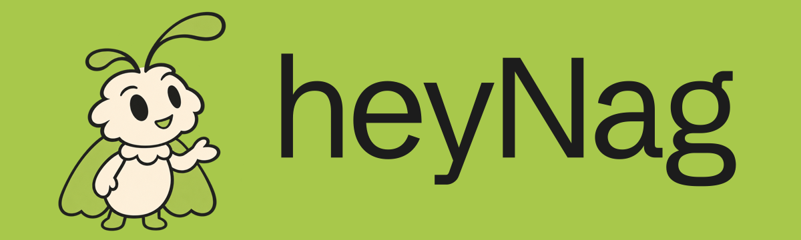

Audit evidence / local rendering of README content; not the live GitHub UI.
Hey, I'm Nag. I work in software, building tools, connecting systems, and following the small questions that turn into projects.
Here are a few I'm exploring.
What if our tools worked together?
Charms gives coding agents plugins for analyzing videos and working with saved X posts. The 1Password Codex Plugin connects Codex to 1Password Developer Environments for project setup.
Different tools, with a shared purpose: making the connections between them more useful.
What should software remember?
Starting a new coding session often means explaining the work again. With eva.md, I'm exploring how Markdown and Git can help carry that context forward.
It's in active development. The question is simple; getting the details right is the interesting part.
Can software make you smile?
Some experiments are about how software feels. Grok Bot is an unofficial animated companion for Codex, exploring movement, expression, and a little personality through dark and light editions.
Watch the demonstration.
Exploring ideas worth keeping.